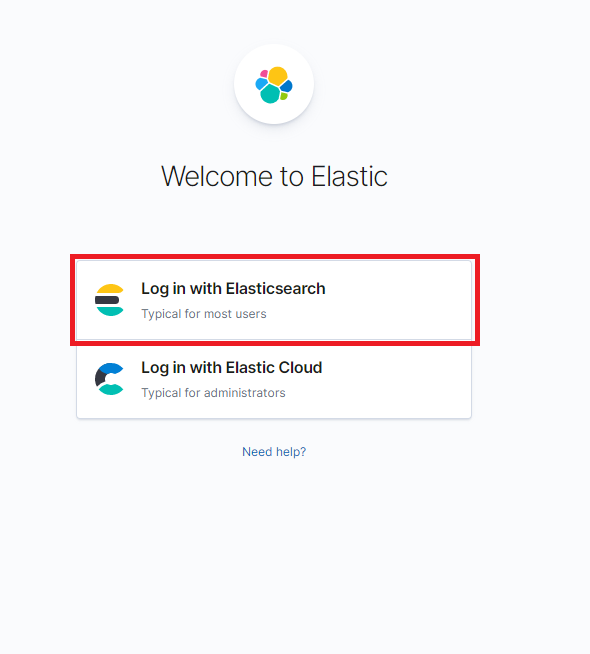

-
Acceda a el link de kibana e inicie sesión seleccionando la opción Log in with Elasticsearch:

-
Ingrese sus credenciales del usuario Elastic:
-
Haciendo click en el menú lateral encontrara la sección dedicada a las features de kibana Dashboard, Visualize, Maps, Discover:
-
Seleccione la opción Ingest your data:
-
Seleccione la opcion Sample Data:
-
Seleccione la opcion Add data en los tres Datasets disponible: